My Education Journey
2014 — Han Ming (Puchong) → Pay Fong 2 (Malacca)
My journey begins in 2014, when I transferred from Han Ming Puchong to Pay Fong 2 in Malacca. It was a challenging transition — new place, new friends, and a completely new environment — but I adapted, grew stronger, and made lasting friendships and experiences that shaped me into who I am today.
 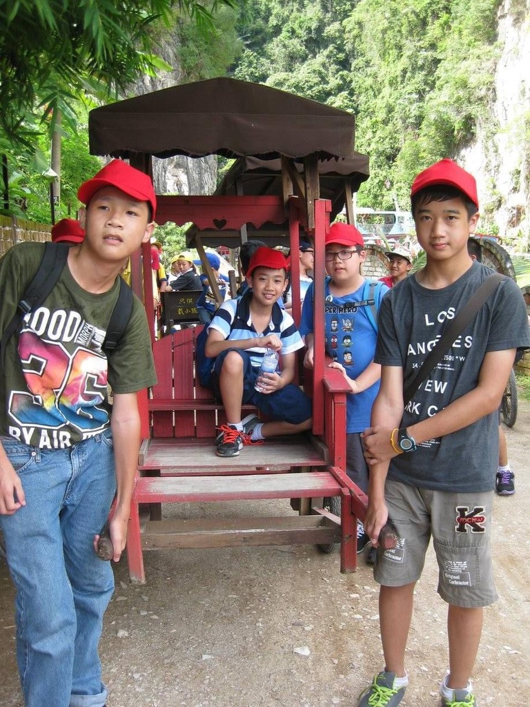
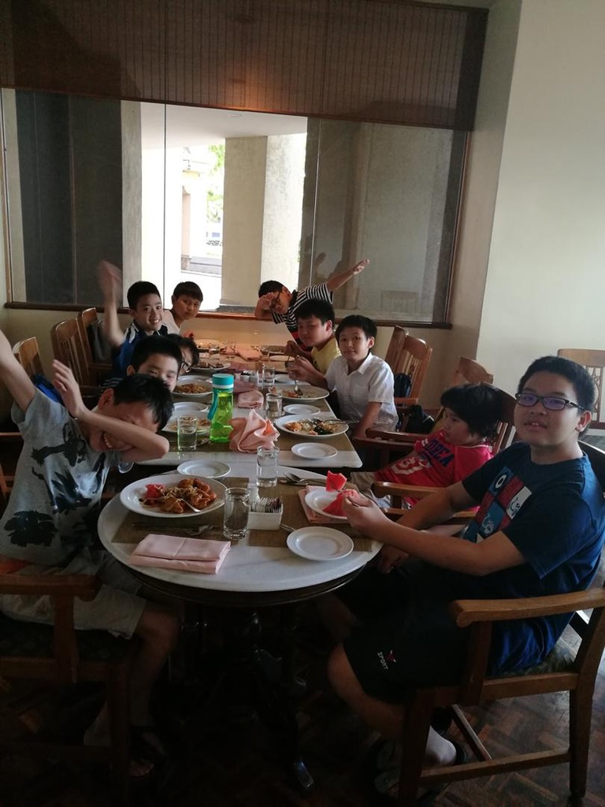
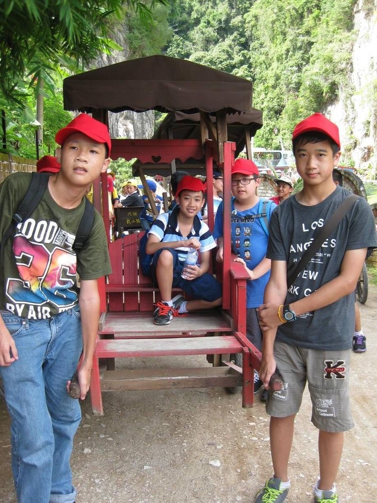
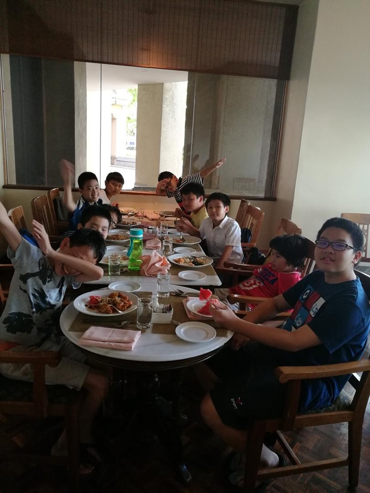
High School — St. Francis Institution (2017)
Entering high school, I met many new people and grew even closer to my friends from Pay Fong 2. Subjects became more challenging but also more meaningful. It was during this time that I discovered my passion for coding and analytics — which ultimately inspired me to pursue Data Science as my path.
Sunway University — ADTP Program (2022)
My time at Sunway University truly shaped my academic and personal journey. During my ADTP studies, I made the major decision to switch from Computer Science to Data Science — a choice that aligned perfectly with my growing interest in analytics and development. I also met incredible friends and mentors who shared the same goal of studying abroad, forming bonds that extended across different states and universities.

 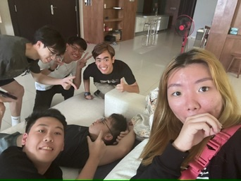
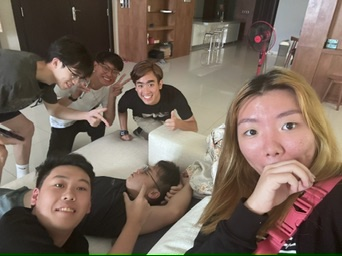

San José State University (Fall 2024)
San José State University — Bachelor’s in Data Science (Fall 2024). San José State University is my next big step — where I’ll be pursuing my Bachelor’s in Data Science starting Fall 2024. I’m thrilled for the opportunities, challenges, and growth that lie ahead as I continue my journey in data analysis and development, this time in an entirely new country. During my time here, I’ve met both new friends and familiar faces from Sunway — reconnecting with old bonds and creating unforgettable new memories. I’ve also found a great community through badminton, where I’ve met amazing people and shared countless enjoyable moments. My experience at SJSU has already become an inspiring chapter in my academic and personal journey.
 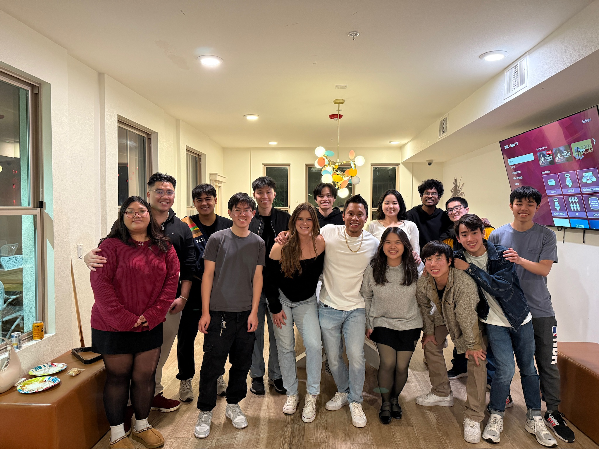
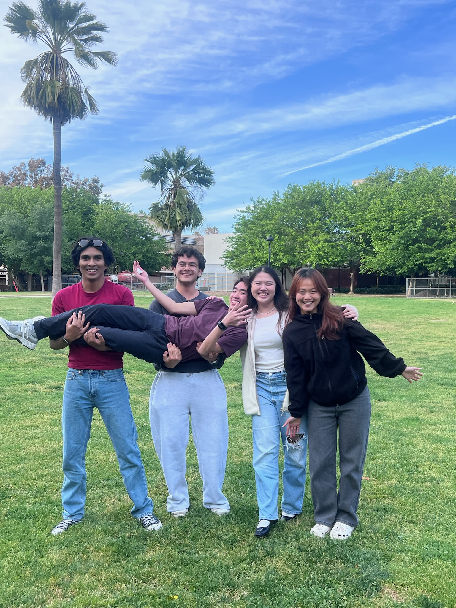
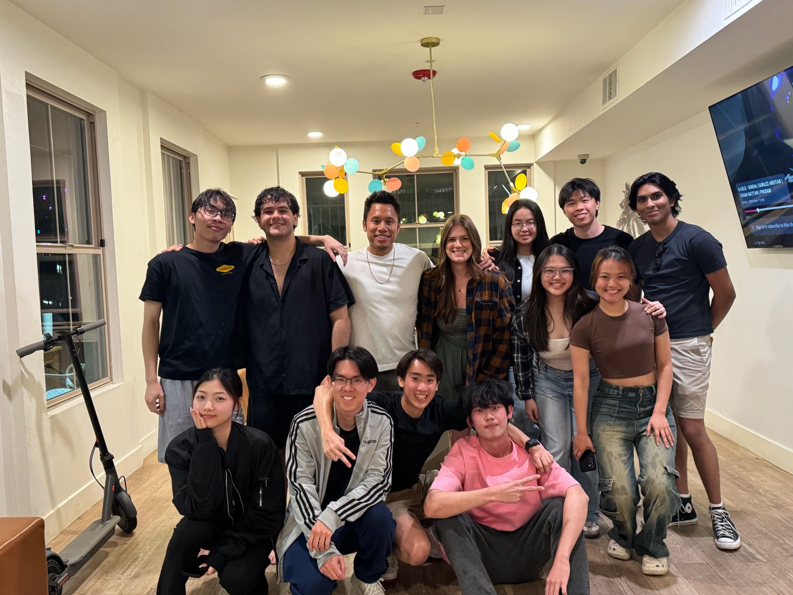
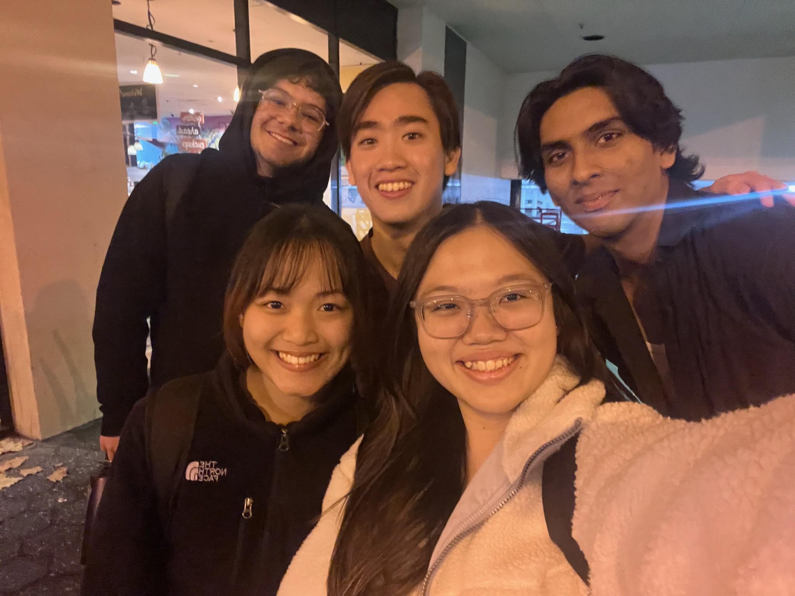
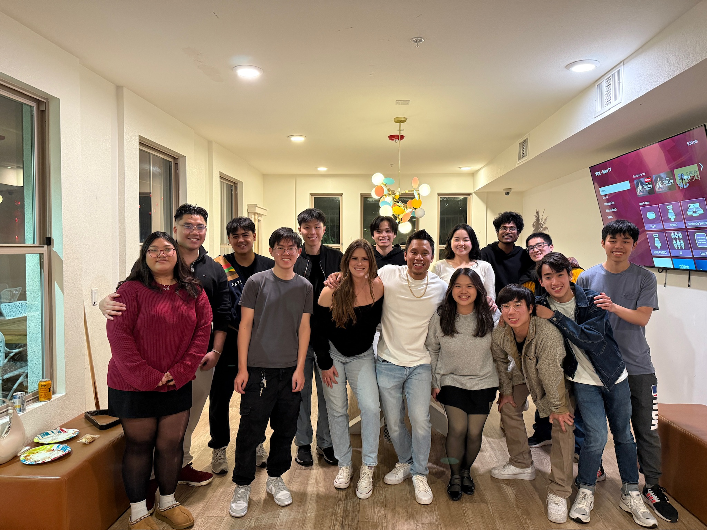
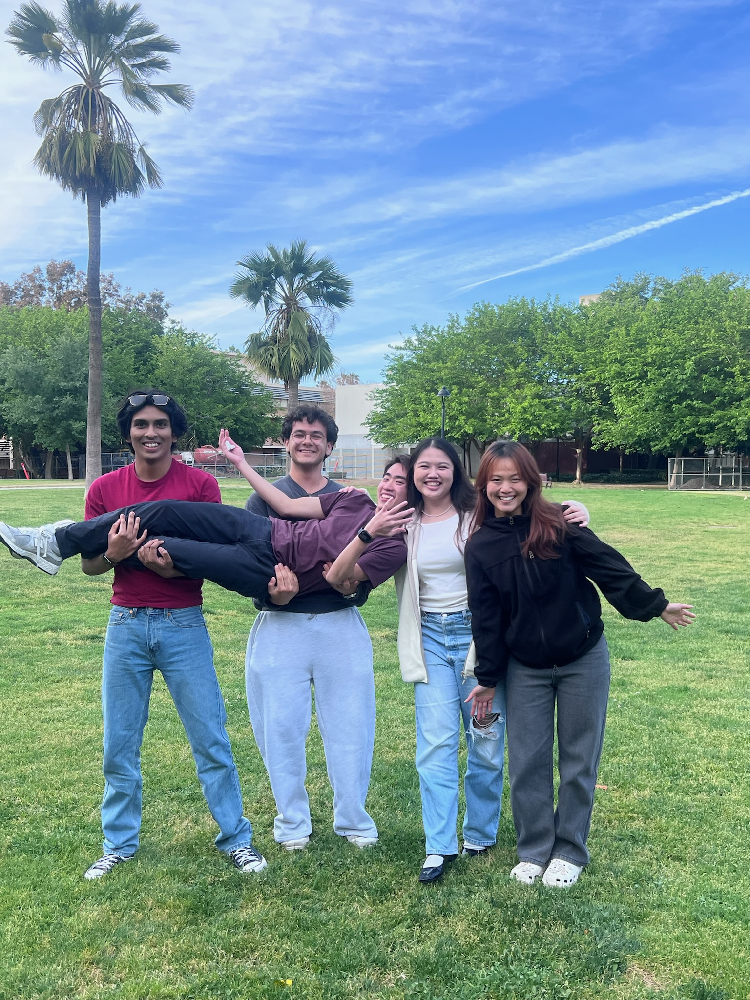
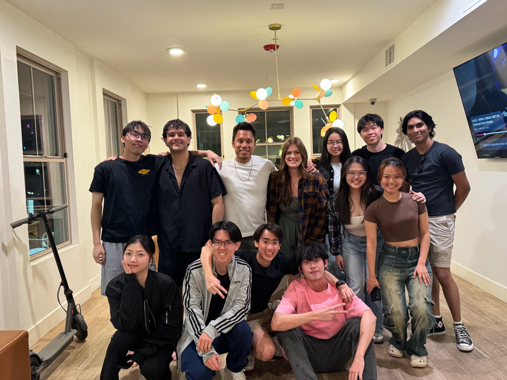
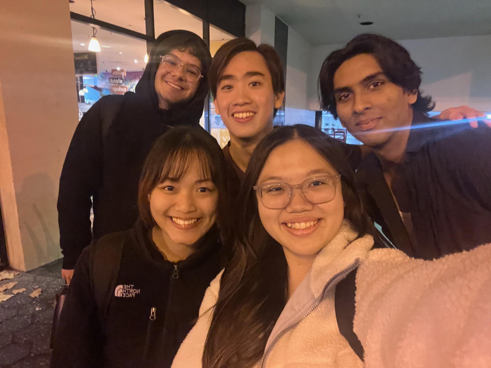